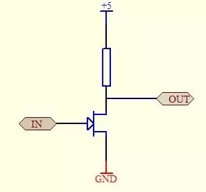
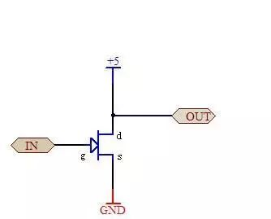
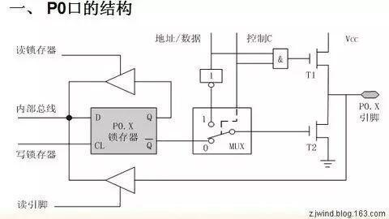
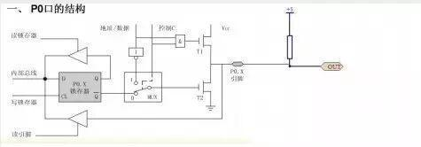

上拉电阻的作用

单片机上拉电阻的作用
1. 场效应管的漏极开路门电路如下：

图中上拉电阻作用分析如下：
管子导通或截止可以理解为单片机的软件时端口置1或0.
(1)如果没有上拉电阻(10k)，将5V电源直接与场效应管相连。

当管子导通时， 管子等效一电阻，大小为1k左右，因此5v电压全部加在此等效电阻上，输出端Vout=5v。
当管子截止时，管子等效电阻很高，可以理解为无穷大，因此5v的电压也全部加在此等效电阻上，Vout=5v。
在这两种情况下，输出都为高电平，没有低电平。
(2)如果有上拉电阻(10k)，将5v电源通过此上拉电阻与与场效应管相连。

当管子导通时， 管子等效一电阻，大小为1k左右，与上拉电阻串联，输出端电压为加在此等效电阻上的电压，其大小为Vout = 5v * 管子等效电阻/(上拉电阻+管子等效电阻)=5v * 1/(10+1) = 低电平。
当管子截止时， 管子等效电阻很高，可以理解为无穷大，其与上拉电阻串联，输出端电压为加在此等效电阻上的电压，其大小为Vout = 5v * 管子等效电阻/(上拉电阻+管子等效电阻)=5v * 无穷大 /(无穷大+1) = 高电平。
由(1)和(2)，可以分析出等效电阻的作用。
2. 51单片机的P0口电路如下：

由1中的上拉电阻作用分析可知，需要在51单片机的P0口，加一个上拉电阻，加上后的电路如下：

====电子协会=====
关注“沈理电协”微信公众平台，了解更多资讯！